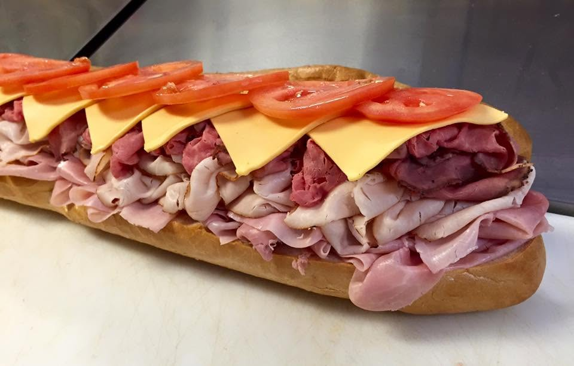

01 / BREAKFAST
FRESH BAGELS
Breakfast starts with a real Jersey-style bagel. Keep it classic or make it your own.
Bagel favoritesYOUR NEIGHBORHOOD JERSEY DELI
Real Jersey-style bagels. Stacked deli subs. Breakfast favorites with a little East Coast attitude. Right here in Carolina Forest.

A LITTLE NORTH. A LITTLE SOUTH.
The bagel run. The lunchtime sub. The breakfast sandwich you’re already thinking about tomorrow. We bring that neighborhood Jersey deli feeling to Carolina Forest, serving breakfast and lunch favorites right here in Myrtle Beach.
COME HUNGRY. LEAVE HAPPY.
Breakfast starts with a real Jersey-style bagel. Keep it classic or make it your own.
Bagel favoritesGenerously stacked deli sandwiches with Boar’s Head meats and cheeses. That’s lunch sorted.
Sub favoritesEggs, cheese, bacon, sausage, ham, turkey and Taylor pork roll. Your kind of morning.
Philly cheesesteaks, Reubens and hot deli favorites. Bring a proper appetite.
NO NEED TO COMPLICATE A GOOD THING.
Bagels made from dough brought in from New Jersey. East Coast flavor, right here.
Featuring Boar’s Head meats and cheeses. Good sandwiches start with good ingredients.
From your morning bagel run to a stacked afternoon sub. We’ve got your cravings covered.
A neighborhood shop for the Myrtle Beach community. Come as you are. Come hungry.

YOUR NEXT REGULAR SPOT
You don’t have to head north for a proper bagel or a generously made deli sandwich.
Here in Carolina Forest, we’re keeping it simple: Jersey-style food, breakfast and lunch favorites, and a casual neighborhood spot you can make part of your day.
Whether you’re a local, a visitor, or a Jersey transplant looking for a familiar bite, there’s a place for you here.
Make the bagel runGOOD FOOD. GOOD COMPANY.
Office breakfast? Family gathering? A meeting that needs better food? Give us a call to talk catering and larger orders.
WE’LL SEE YOU ON POSTAL WAY.
Planning your visit? Call for current hours.